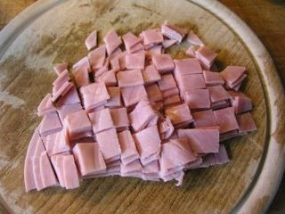
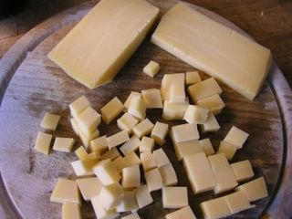
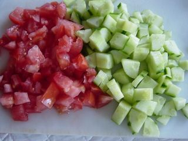
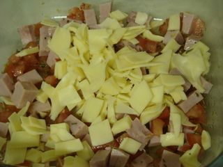

Шаг 1: нарезаем ветчину.

Вначале займемся подготовкой ветчины, освобождаем ее от упаковки и выкладываем на разделочную доску. Затем острым ножом нарезаем ветчину либо соломкой, либо кубиками форма не играет особой роли для данного салата, все зависит от вашего желания. Итак, после того как вы определились с формой, измельчаем мясной компонент и выкладываем в отдельную тарелку.
Шаг 2: нарезаем сыр.

Переходим к сыру, его тоже можно измельчить несколькими способами например нарезать удобными кубиками размером около 1 сантиметра или натереть на терке. Подготовленный сыр выкладываем в тарелку к измельченной ветчине.
Шаг 3: нарезаем помидоры и огурец.

Далее промываем под проточной водой помидоры и огурец, при желании огурец можно очистить от кожуры. Чистые овощи обтираем бумажными кухонными полотенцами и выкладываем на разделочную доску. Помидоры нарезаем средними кусочками до 2 сантиметров произвольной формы, а огурец лучше нарезать также как и ветчину. Измельченные овощи перекладываем в общую тарелку.
Шаг 4: заправляем салат.

Перемешиваем наш салат столовой ложкой, добавляем соль, черный молотый перец по вкусу и майонез. Затем снова перемешиваем все ингредиенты между собой до однородности.